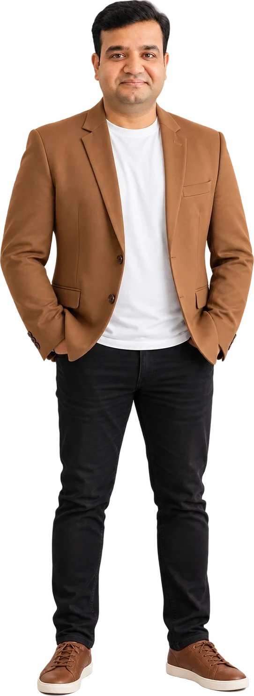
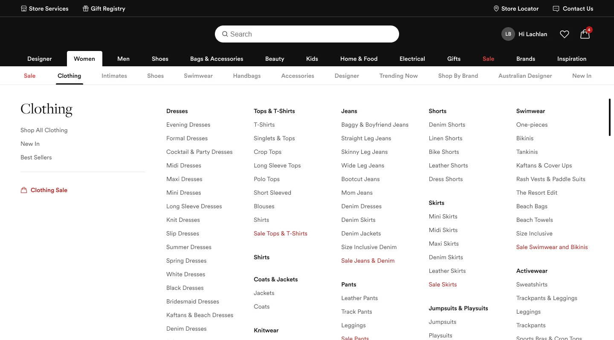
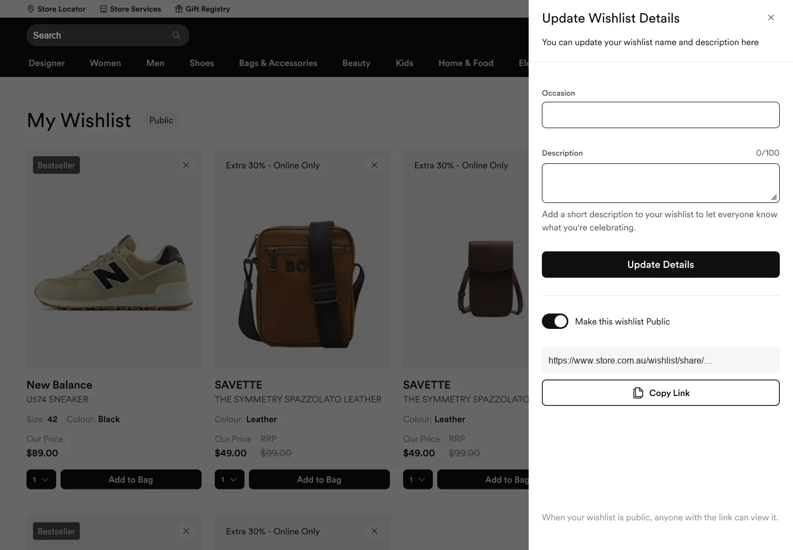
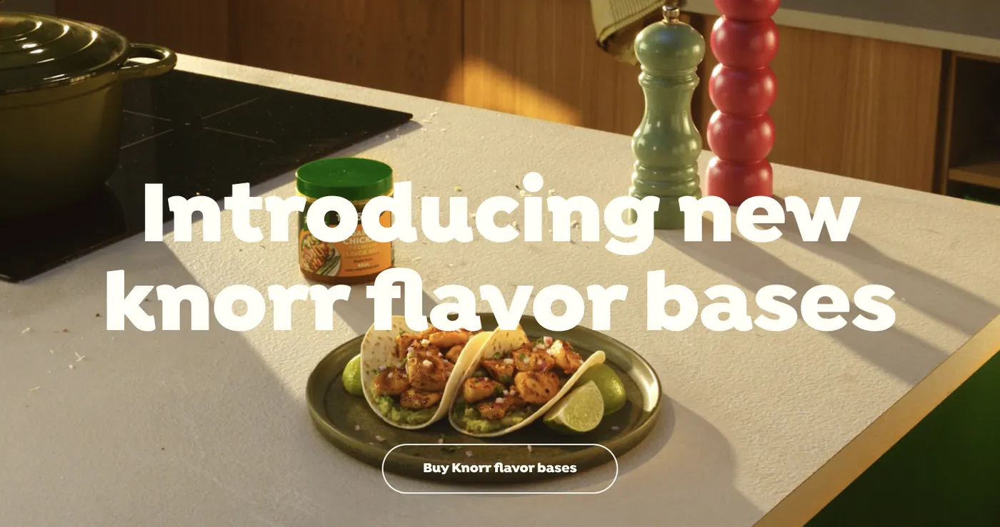
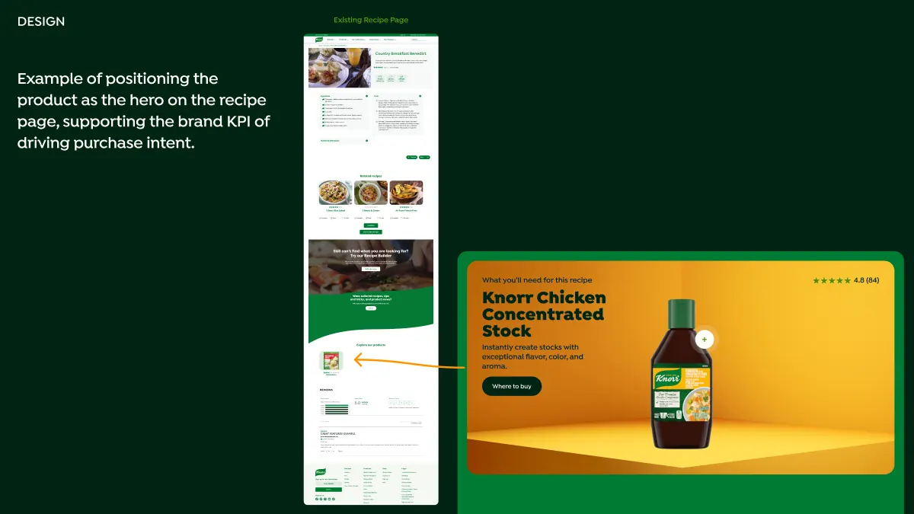
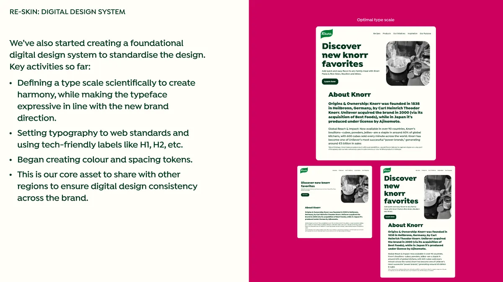
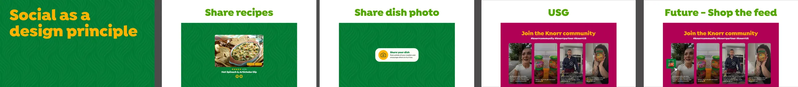
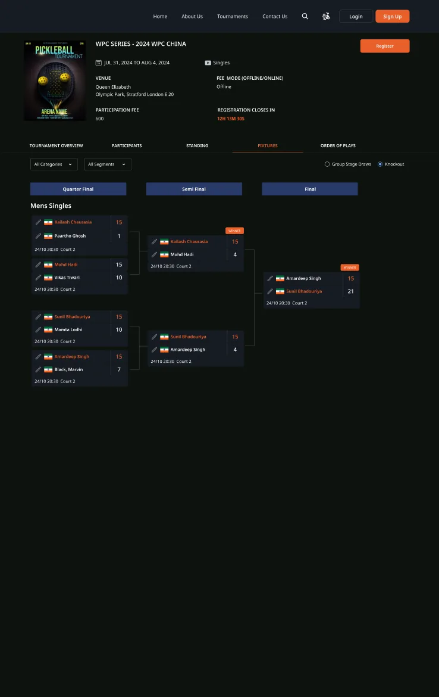
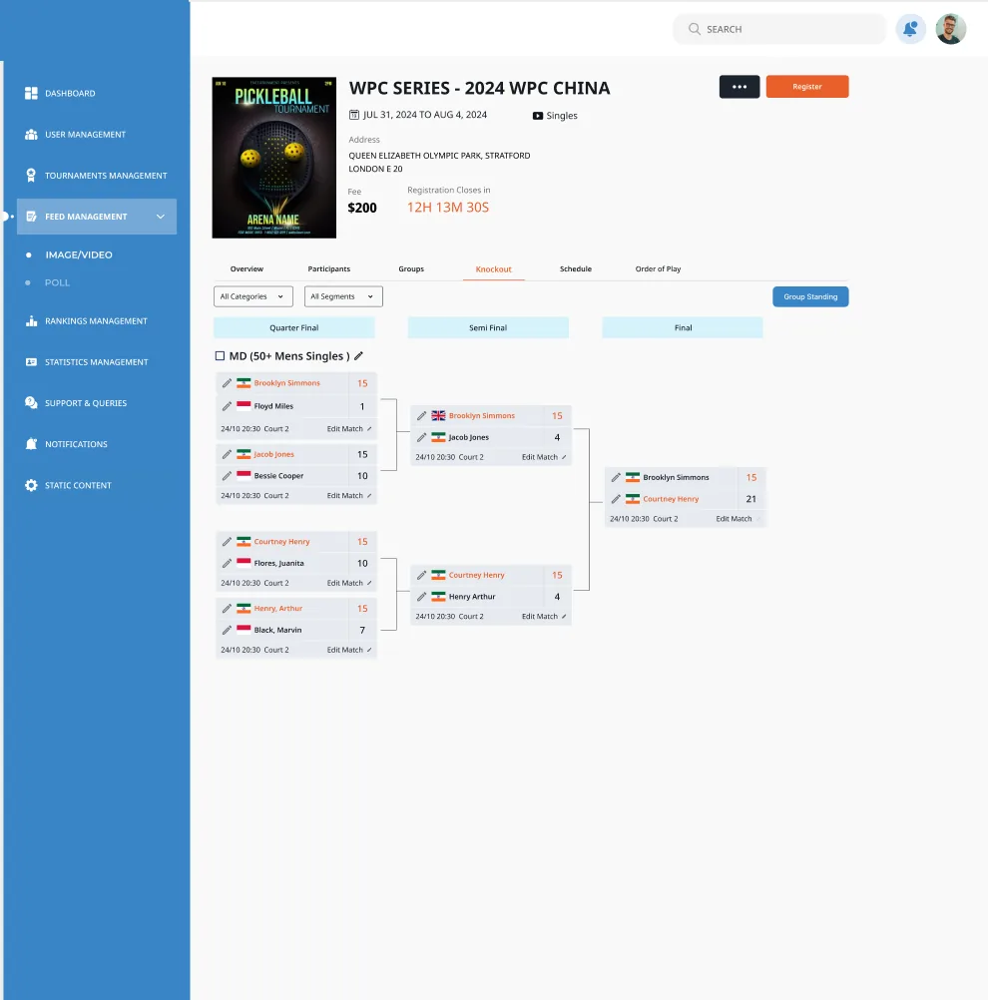
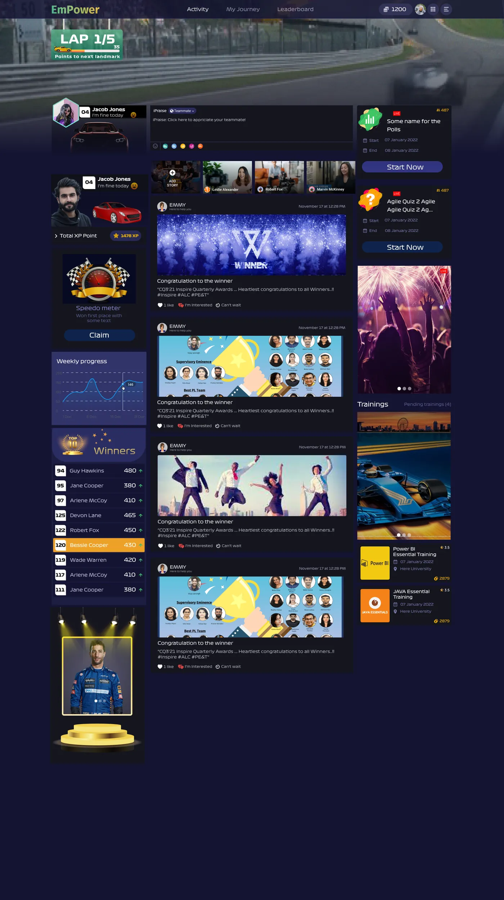

Selected work · 2019–2025
Design that moves the business.
Subhash Kapoor, senior UX and product designer. 15+ years designing hands-on across e-commerce, enterprise AI, fintech, insurance, logistics and real estate.
subhashkapoor.github.io/Subhash-portfolio
Why hire me
Senior UX, hands-on from insight to launch
Experience
15+ yrs
designing products myself: research, flows, UI and prototypes your developers can build from
Domains
8
industries shipped: retail, insurance, real estate, travel, logistics, sports, FMCG, enterprise
Impact
30%
faster decisions on an enterprise AI platform I designed, end to end
Expertise
UX research
Information architecture
Interaction design
UI & visual design
Design systems
Prototyping & testing
Arabic / RTL
Clients
Unilever (Knorr) · FedEx · HERE Technologies · AlphaSense · Sukoon · Dar Al Arkan · Camion · Adventure
Expertise · Design systems
Systems that make teams faster, not busier.
I design systems end to end, from the first audit to the day engineers ship with them on their own.
01
Audit & rescue
Map what exists, find duplicates and drift, and plan the path from a legacy kit to a system.
02
Tokens & theming
Primitives to semantic tokens, light and dark modes, multi-brand and RTL ready.
03
Component libraries
Figma components with variants and every state: default, hover, focus, loading, error.
04
Accessibility built in
Contrast, focus order and touch targets checked in the component, not per screen.
05
Handoff & code parity
Token and component names that match code, so engineers inspect instead of guess.
06
Adoption & governance
Docs in Figma, training for designers and engineers, and a clear way to contribute.
Systems I've shaped
Orion
built end to end
Luxury retail
legacy system upgraded
Knorr US
digital design toolkit
Dar Al Arkan
bilingual, RTL tokens
Pickleball
dark and light themes
Orion · What it changed
One system, every surface. A faster team.
Orion library
feeds three products
Admin panel
Tables, filters and bulk actions for operations teams.
Website
Notifications, tabs and steps for customer journeys.
Mobile app
The same tokens at 393px, in light and dark.
40%
Fewer design–dev iterations
Every state is designed up front, so reviews stop bouncing back and forth.
1:1
Handoff in tokens, not redlines
Figma variables carry the same names as code, so engineers inspect tokens instead of measuring pixels.
All
Trained the entire dev team
Hands-on sessions so every engineer could find, use and extend components on their own.
3
Products, one look and feel
Admin panel, website and mobile app ship new features that already match.
Case study 01 of 08
Luxury e-commerce, ANZ
Modernising a heritage department store's website and app, from audit to design system.
Retail
Web + app
UX lead
Luxury e-commerce
Sukoon
Dar Al Arkan
Knorr US
Pickleball
Adventure
Camion
Empower
Case study 01 · Luxury retail · Australia
Luxury e-commerce, minus the friction
A heritage department store's website and app had grown piece by piece: dense menus, inconsistent components and a legacy design system slowing every release.
+4%
client sales, every year
4
breakpoints, every screen
6
sign-in flows, web and app
My role: UX lead and hands-on designer
Luxury e-commerce · Decisions
Audit first, then fix the busiest screens
Evidence before opinions
A heuristic audit and live-site testing turned debates into a prioritised backlog.
A menu that doesn't overwhelm
Department, then sub-category, then the full menu, tested with customers before sign-off.
Search where people look
A wider, centred search and a header that stays pinned while shopping.

The new header: pick a department, then open only the menu you need. Brand marks removed.
Luxury e-commerce · Outcome
A wishlist built for gifting, on a system built to scale
From saving to sharing
Occasion, description and a public link turn a wishlist into a gift list.
Unhappy paths, designed
Load, share and remove errors drawn at every breakpoint before build.
Legacy system, upgraded
Foundations first, anatomy documented, so developers stopped guessing.

Manage and share from a side panel, with the list still visible behind it.
Case study 02 of 08
Sukoon insurance app
A first mobile app for UAE customers, built around the moment that matters most: the roadside claim.
Insurance
iOS + Android
UX + UI design
Luxury e-commerce
Sukoon
Dar Al Arkan
Knorr US
Pickleball
Adventure
Camion
Empower
Case study 02 · Sukoon Insurance · UAE
Insurance that fits in one hand
Policies, claims and help were spread across phone lines, branches and email. Sukoon needed its first app, for people who are stressed and on one bar of signal.
20+
flows, motor, health and servicing
6
sprints, each ending in a prototype
0→1
shipped to App Store and Play
My role: UX and UI design, discovery to hypercare
Sukoon · Hero flow
Roadside to submitted, without typing a report
Scan, don't type
The camera reads the police report, Mulkiya and licence; the customer confirms.
Always show where I am
Six visible steps and a review screen replace silence after "Submit".
Help one tap away
Roadside and medical help work even before sign-in.
Case study 03 of 08
Dar Al Arkan property app
One bilingual app for Saudi Arabia's property market: buyers and renters on one side, brokers and owners on the other.
Real estate
English + Arabic
UX + UI design
Luxury e-commerce
Sukoon
Dar Al Arkan
Knorr US
Pickleball
Adventure
Camion
Empower
Case study 03 · Dar Al Arkan · Saudi Arabia
One property app for the whole market
Buyers and renters need to trust what they see; owners, brokers, developers and agents need every lead in one place. In English and Arabic.
136
screens designed end to end
5
user roles in one app
2
languages, full right-to-left
My role: UX and UI design, research to handoff
Dar Al Arkan · Decisions
Designed for both sides of the deal
Simple search first
One bar and three tabs; filters only when needed, from a seven-portal review.
Trust before the visit
Photos, video and a 360 view lead every listing; enquiries land as leads.
Mirrored, not translated
Layouts built to flip to Arabic right-to-left from the first wireframe.
Case study 04 of 08
Knorr US website
Redesigning knorr.com/us for Unilever's younger, bolder brand, social-first and mobile-first.
FMCG
Responsive web
Live Dec 2025
Luxury e-commerce
Sukoon
Dar Al Arkan
Knorr US
Pickleball
Adventure
Camion
Empower
Case study 04 · Unilever · Knorr US
A 187-year-old brand, made for the feed
The brand got younger and bolder; the US website hadn't. Most visitors arrive from social, on a phone, straight onto one recipe.
630+
recipes made easier to find
47
components reskinned
My role: UX and UI design (hands-on) · Live December 2025

The new homepage hero, built on the refreshed brand identity.
Knorr US · Recipe page
The page that does most of the work
Designed where people land
One recipe, from social, on a phone: so mobile came first.
The product is the hero
"What you'll need" moves into the recipe, serving the purchase-intent KPI.
"Made this recipe?"
Photos and reviews from real cooks close the loop with social.

Before: the product sat at the bottom. After: a hero block with rating and "Where to buy".
Knorr US · Social-first and toolkit
Social by design, on a toolkit other markets reuse
Social built into the moments that matter: share a recipe, share your dish, cook with the community, and later, shop the feed. Underneath, 47 components and 11 templates audited, with a type scale and tokens shared across regions.


Case study 05 of 08
Pickleball tournament platform
A website, an admin console and a fan app for the fastest-growing sport, built on one source of truth.
Sports tech
Web + admin + app
Design manager
Luxury e-commerce
Sukoon
Dar Al Arkan
Knorr US
Pickleball
Adventure
Camion
Empower
Case study 05 · Sports tech · USA
The fastest-growing sport, run on spreadsheets
Players hunted for events, organisers built draws by hand, and fans had nothing to do between matches. One tournament, four very different users.
3
connected products
4
user roles, one source of truth
My role: Design manager: direction, reviews and delivery · Launched

Pickleball · Decisions
One score, every screen
Design the data first
A referee's score updates the website and the app at the same moment.
Same bracket, two contexts
Admins edit the exact component players see, in a light theme built for work.
Give fans a role
Picks, points and leaderboards turn watching into playing along.

Player website

Admin console
Case study 06 of 08
Adventure travel booking
Hotel and vacation-rental booking from search to checkout, on web and mobile, built by a team of three designers I led.
Travel
Web + mobile
Design manager
Luxury e-commerce
Sukoon
Dar Al Arkan
Knorr US
Pickleball
Adventure
Camion
Empower
Case study 06 · Travel · India
Booking travel is full of small doubts
Dates, rooms, guests, price, payment: every step is a chance to drop off. We designed one journey that answers each doubt at the moment it appears.
3
designers led across web and mobile
+18%
search-to-booking conversion
My role: Design manager, leading two designers · Launched


Adventure · Decisions
Answer each doubt where it appears
Search in steps
Destination, then dates, then guests: one focused decision per screen.
Price on the calendar
High, low and weekend prices shown while picking dates.
Guests are welcome
Guest and member checkout designed side by side, no sign-up wall.

Web results

Mobile checkout
Case study 07 of 08
Camion trucking marketplace
One marketplace for the three people behind every shipment: the shipper, the transporter and the driver.
Logistics
Web + mobile
Design lead
Luxury e-commerce
Sukoon
Dar Al Arkan
Knorr US
Pickleball
Adventure
Camion
Empower
Case study 07 · Logistics · Dubai, UAE
Trucking in the UAE ran on phone calls
Shippers called around for quotes, nobody knew where the truck was, and proof of delivery was a WhatsApp photo. Camion turned it into a marketplace.
3
connected apps: shipper, transporter, driver
−40%
time to book a truck
My role: Led the entire design initiative · Launched


Camion · Decisions
One trip, one status, three apps
Bids, not phone calls
Shippers post once and compare offers side by side.
Utilisation first
Idle trucks cost money, so fleet utilisation leads the transporter dashboard.
Built for the cab
Driver screens use big targets and an OTP to start each trip.

Transporter dashboard
Live trip timeline
Case study 08 of 08
Empower engagement platform
A race-themed engagement platform for HERE Technologies employees: take part, earn laps and points, redeem rewards.
Enterprise
Gamification
Design lead
Luxury e-commerce
Sukoon
Dar Al Arkan
Knorr US
Pickleball
Adventure
Camion
Empower
Case study 08 · Enterprise · HERE Technologies
Engagement tools nobody opened
Quizzes, surveys, events and recognition lived in separate tools that felt like chores. Empower turns taking part into a race with a finish line.
5
activity types in one race
87%
employee satisfaction after launch
My role: Design lead, from research to visual design · Launched


Empower · Decisions
A strong metaphor does half the work
Laps, not levels
Progress shown as laps and points around a circuit everyone understands.
Celebrate in public
Wins and appreciation in the feed; leaderboards by team, not just people.
Coins with a purpose
A rewards store and a manager dashboard give points meaning.

Race home
Leaderboard
Let's build something great
Thank you.
subhash@toptal.com
Mobile
+91-9990799199
Portfolio
subhashkapoor.github.io/Subhash-portfolio